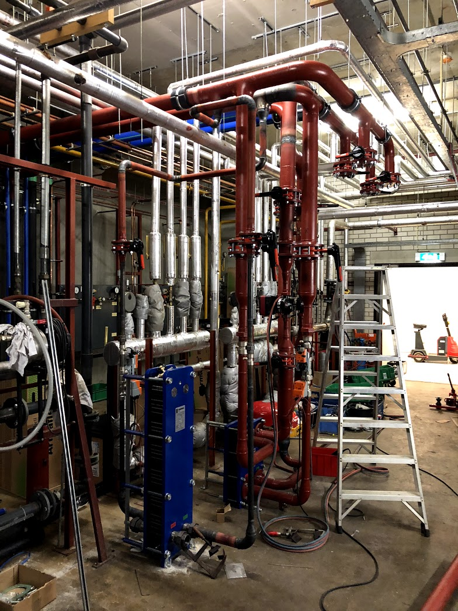
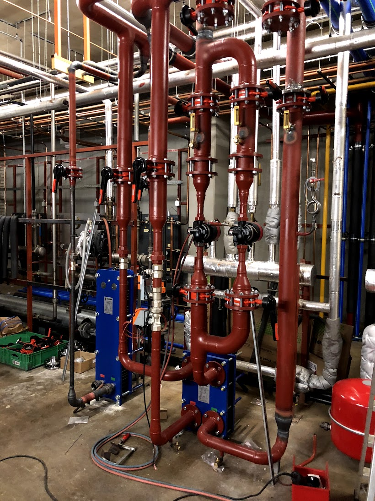
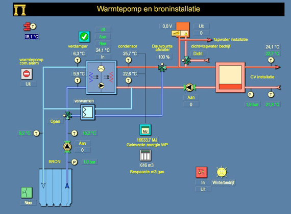
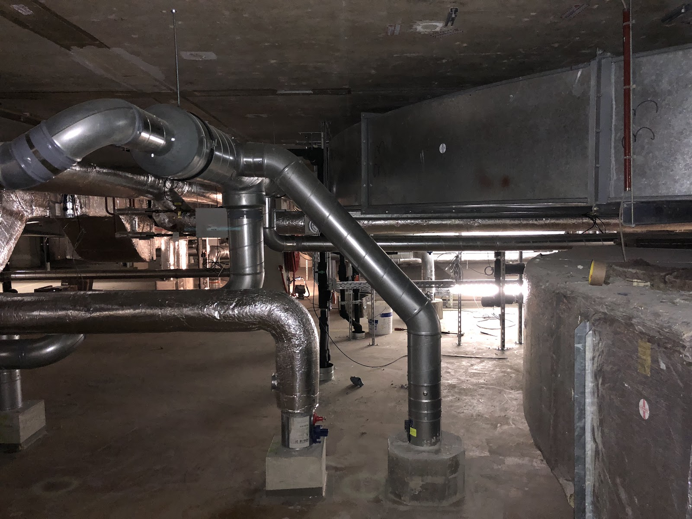
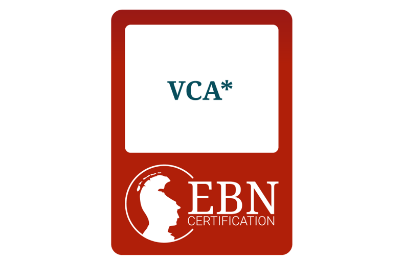
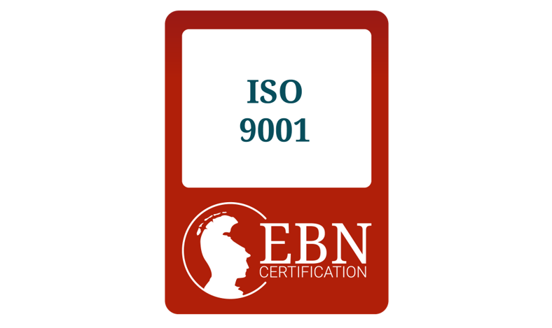
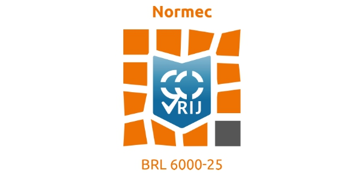
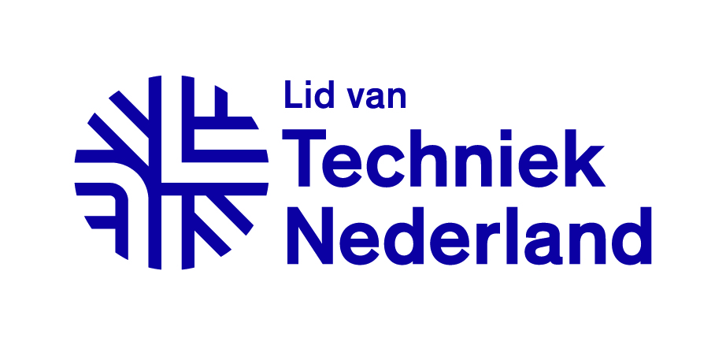
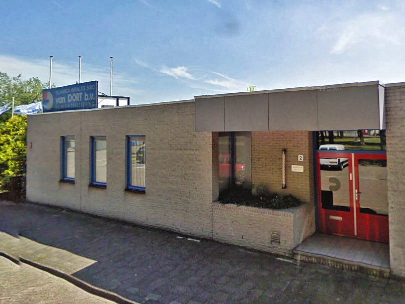

Installatietechniek in Utrecht, sinds 1976
Uw gebouw in vaste handen.
Wij ontwerpen, installeren en onderhouden klimaatinstallaties. Uitgevoerd door onze eigen monteurs, met een vast team dat uw gebouw kent.

Van eerste tekening tot jaarlijkse keuring.
Wij zijn uw partner voor alle gebouwinstallaties. Of het nu gaat om een groot systeem in de utiliteitsbouw of een kleinere aanpassing, in nieuwbouw of een bestaand pand: u houdt één partij voor het hele traject.
-
Stap 1
Advies en ontwerp
We denken mee over het beste installatieconcept voor uw gebouw en ontwerpen met de nieuwste technieken en software. Het resultaat: een installatie die efficiënt, duurzaam en comfortabel is, en past bij uw gebouw en de mensen die erin werken.
-
Stap 2
Dimensioneren en detailleren
We berekenen verwarming, ventilatie en luchtbevochtiging op de echte behoefte van het gebouw. Daarna werken we het ontwerp uit tot op de plaats van elke leiding, kabel en component. Samen met u, uw architect en uw aannemer, binnen budget en planning.
-
Stap 3
Klimaatinstallaties aanleggen
Verwarming, ventilatie, koeling en luchtbehandeling, compleet geïnstalleerd. Vakkundig gemonteerd, afgesteld en ingeregeld, zodat het binnenklimaat in elk seizoen klopt. No-nonsense, van start tot oplevering.
-
Stap 4
Beheer, service en onderhoud
Preventief onderhoud, periodieke keuringen en het verhelpen van (complexe) storingen. Zo blijven uw installaties veilig, gebruiken ze niet meer energie dan nodig en gaan ze langer mee.
Zo werkt ons onderhoud

Onderhoud dat u kunt plannen.
Elke installatie krijgt een eigen onderhoudsplan, afgestemd op uw vastgoedstrategie, de gebruikers en de wet. Zo houdt u grip op kosten en voorkomt u verrassingen.
- Inventarisatie
- We beoordelen elke installatie volgens NEN 2767: technische staat, prestaties, levensduur en risico's, met een helder overzicht van de conditiescores.
- Planning en MJOP
- Na uw akkoord verwerken we de maatregelen in een jaar- en detailplanning en een actueel meerjarenonderhoudsplan, met risicoanalyse.
- SMART checklist
- Per installatie een eigen checklist met historie, leveranciersvoorschriften en regelgeving. Zo is elk onderhoudsbezoek volledig en controleerbaar.
- Keuringen
- We controleren, vervangen waar nodig, nemen watermonsters en voeren keuringsinspecties uit volgens de NEN-normen.
Vervangen vóórdat het stuk gaat.
Dat is smart maintenance. In ons datasysteem houden we bij welke storingen we oplossen. Zo zien we waar onderdelen in de praktijk eerder slijten dan de leverancier opgeeft.
Die onderdelen vervangen we op tijd. Dat bespaart kosten en voorkomt klachten van gebruikers door uitval.

Eigen monteurs. Een vast team. Korte lijnen.
Al het werk doen onze eigen ervaren monteurs. Zij voelen zich verantwoordelijk voor de kwaliteit van hun werk en het comfort van de mensen in uw gebouw. Rustig, grondig, en ze leveren altijd een onderbouwde analyse.

Een vast aanspreekpunt
Overdag krijgt u de persoon aan de lijn naar wie u vraagt. Een voorbereid vast team en geregeld contact, zodat u weet waar u aan toe bent.
Korte lijnen met leveranciers
Onderdelen zijn snel geleverd, en we overleggen met onze leveranciers over de beste oplossing voor uw situatie.
Meer dan 50 jaar ervaring
Sinds 1976 werken we aan alle typen gebouwinstallaties, met de nieuwste technologie en software.
Gecertificeerd en aangesloten
Veilig werken en vaste kwaliteit, aantoonbaar.




Bel ons. We nemen op.
Overdag krijgt u direct de contactpersoon die u zoekt. Buiten werktijd verbindt onze 24/7 servicedesk u door, zodat u altijd geholpen wordt.
030 241 5376Kantoortijden
| ma t/m vr | 08:00 tot 16:30 |
| za en zo | gesloten |
Buiten deze tijden: 24/7 servicedesk via hetzelfde nummer.
